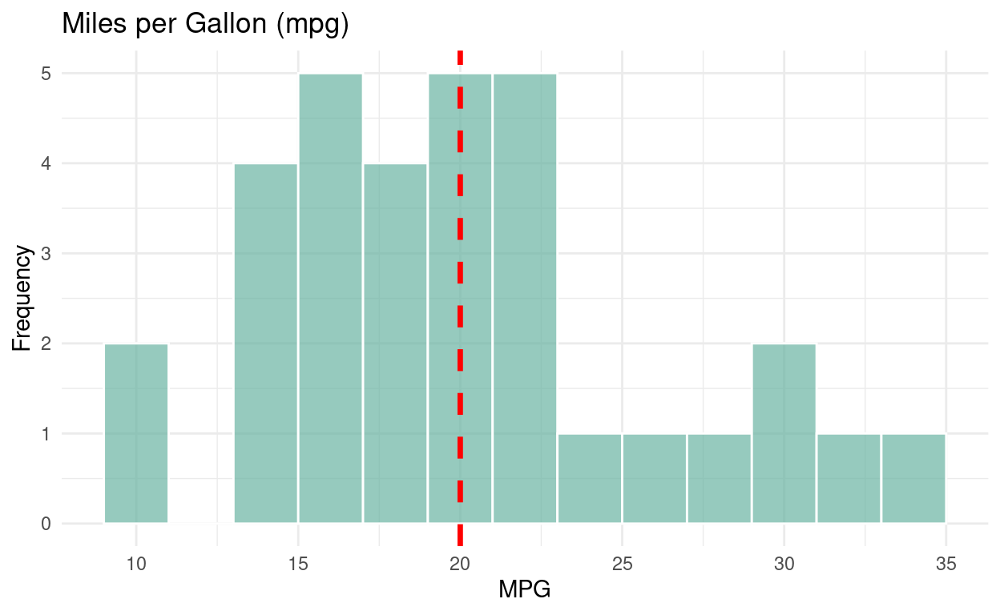
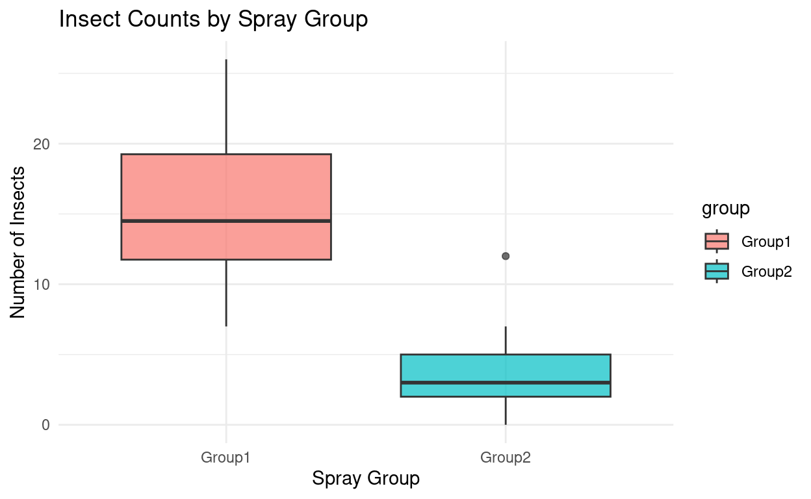
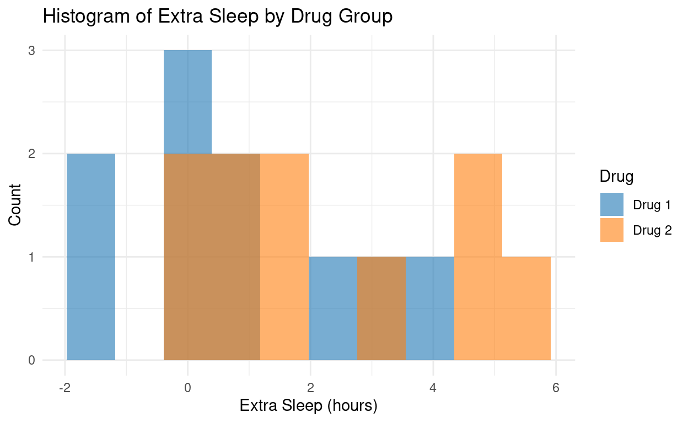

t-Tests: Comparing Means
In this tutorial, we’ll walk through how to compare means using three different types of t-tests, depending on your data and research design.
When we compare two sets of numbers (like test scores, weights, or ratings), we use t-tests to help figure out whether the differences we see are meaningful or just due to chance.
These tests are helpful in answering questions like:
- Is the average score in a class significantly different from a passing score (like 70)?
- Do students in two different classrooms score differently on the same test?
- Does a group’s average performance improve after an intervention (like a training session)?
We will walk through three types of t-tests:
- One-sample t-test
- Independent-samples t-test
- Dependent-samples (paired) t-test
What do you need to use a t-test?
A continuous (numeric) outcome variable (like test score, height, or weight)
Grouping variable (only for independent/dependent t-tests)
Reasonable sample size (not too small)
Normal distribution (especially for small samples)
No significant outliers
One- vs. Two-Tailed Tests
What’s a one-tailed or two-tailed test?
- A two-tailed test checks for any difference (higher or lower)
- A one-tailed test checks for a difference in a specific direction (only higher or only lower)
One-Sample t-Test
When to Use This Test
Use the one-sample t-test when you want to compare the mean of your sample to a known or hypothesized population value.
Example: Suppose we know the national average exam score is 75, and we want to see if our class scores differently.
Assumptions
- You’re testing one group against a single value.
- Data are continuous (interval/ratio scale) and approximately normally distributed.
- Observations are independent.
Template Code
# default is two-tailed
t.test(data$variable, mu = 75)
# one-tailed
t.test(data$variable, mu = 0, alternative = "greater")
t.test(data$variable, mu = 0, alternative = "less")Example
# Efficency of cars
data(mtcars)
t.test(mtcars$mpg, mu = 30)##
## One Sample t-test
##
## data: mtcars$mpg
## t = -9.3009, df = 31, p-value = 1.757e-10
## alternative hypothesis: true mean is not equal to 30
## 95 percent confidence interval:
## 17.91768 22.26357
## sample estimates:
## mean of x
## 20.09062# Visualization
ggplot(mtcars, aes(x = mpg)) +
geom_histogram(binwidth = 2, fill = "#69b3a2", alpha = 0.7, color = "white") +
geom_vline(xintercept = 20, linetype = "dashed", color = "red", size = 1.2) +
labs(
title = "Miles per Gallon (mpg)",
x = "MPG",
y = "Frequency"
) +
theme_minimal()
Interpretation
- Look at the t-value and p-value: Is the difference big enough to be considered unlikely by chance?
- Use the confidence interval to estimate where the true mean likely falls.
- “A one-sample t-test was conducted to determine whether the mean of [variable] differed significantly from [hypothesized value]. The results showed that the mean [was/was not] significantly different from [value], t(df) = t-value, p = p-value, d = effect size.”
Independent-Samples t-Test
When to Use This Test
Use the independent-samples t-test when comparing the means of two separate groups.
Example: Which bug spray is more effective, Group 1 or Group 2?
Key Concepts
- Groups must be independent (different participants in each group).
- Assumes that the data is normally distributed and that the two groups have similar variances.
- If variances aren’t similar, use Welch’s t-test (the default in R).
Template Code
t.test(score ~ group, data = my_data)- Use
var.equal = TRUEif you’re assuming equal variances. - R will automatically do Welch’s t-test if variances differ.
Example
# Load data
data("InsectSprays")
insect_grouped <- InsectSprays %>%
mutate(group = case_when(
spray %in% c("A", "B", "F") ~ "Group1",
spray %in% c("C", "D", "E") ~ "Group2"
))# Visualization
ggplot(insect_grouped, aes(x = group, y = count, fill = group)) +
geom_boxplot(alpha = 0.7) +
labs(
title = "Insect Counts by Spray Group",
x = "Spray Group",
y = "Number of Insects"
) +
theme_minimal()
# Possible outlier in Group 2# Check variance
var.test(count ~ group, data = insect_grouped)##
## F test to compare two variances
##
## data: count by group
## F = 4.658, num df = 35, denom df = 35, p-value = 1.54e-05
## alternative hypothesis: true ratio of variances is not equal to 1
## 95 percent confidence interval:
## 2.375226 9.134816
## sample estimates:
## ratio of variances
## 4.658031# Significant => therefore, use Welsh's# Independent t-test
t.test(count ~ group, data = insect_grouped)##
## Welch Two Sample t-test
##
## data: count by group
## t = 12.89, df = 49.366, p-value < 2.2e-16
## alternative hypothesis: true difference in means between group Group1 and group Group2 is not equal to 0
## 95 percent confidence interval:
## 10.12954 13.87046
## sample estimates:
## mean in group Group1 mean in group Group2
## 15.5 3.5# Effect size
cohen.d(count ~ group, data = insect_grouped)##
## Cohen's d
##
## d estimate: 3.038218 (large)
## 95 percent confidence interval:
## lower upper
## 2.348310 3.728127Interpretation
- The p-value tells you if the group means differ significantly.
- Report the effect size (Cohen’s d) to describe how big the difference is.
- “An independent-samples t-test was conducted to compare [insect counts] between [spray groups]. There was a [significant/not significant] difference in insect counts between Group1 (M = X̄₁) and Group2 (M = X̄₂); t(df) = t-value, p = p-value.”
Paired-Samples t-Test
When to Use This Test
Use the paired-samples t-test when comparing two related measurements—like before/after scores from the same people.
Example: Did sleep improve using Drug 1 or Drug 2?
Key Concepts
- This test looks at the difference between paired values (e.g., ScoreAfter - ScoreBefore).
- You must have matched or repeated measures.
- Assumes the differences between scores are normally distributed.
Template Code
t.test(data$before, data$after, paired = TRUE)Example
# Loading data
data(sleep)
# Data manipulation
sleep_wide <- sleep %>%
pivot_wider(
id_cols = ID,
names_from = group,
values_from = extra,
names_prefix = "drug"
)
print(sleep_wide)## # A tibble: 10 × 3
## ID drug1 drug2
## <fct> <dbl> <dbl>
## 1 1 0.7 1.9
## 2 2 -1.6 0.8
## 3 3 -0.2 1.1
## 4 4 -1.2 0.1
## 5 5 -0.1 -0.1
## 6 6 3.4 4.4
## 7 7 3.7 5.5
## 8 8 0.8 1.6
## 9 9 0 4.6
## 10 10 2 3.4# Relabel group variable
sleep_labeled <- sleep %>%
mutate(group = factor(group,
levels = c(1, 2),
labels = c("Drug 1", "Drug 2")))
# Visualization
ggplot(sleep_labeled, aes(x = extra, fill = group)) +
geom_histogram(position = "identity", bins = 10, alpha = 0.6) +
labs(
title = "Histogram of Extra Sleep by Drug Group",
x = "Extra Sleep (hours)",
y = "Count",
fill = "Drug"
) +
scale_fill_manual(values = c("#1f77b4", "#ff7f0e")) +
theme_minimal()
# Paired samples t-test
t.test(sleep_wide$drug1, sleep_wide$drug2, paired = TRUE)##
## Paired t-test
##
## data: sleep_wide$drug1 and sleep_wide$drug2
## t = -4.0621, df = 9, p-value = 0.002833
## alternative hypothesis: true mean difference is not equal to 0
## 95 percent confidence interval:
## -2.4598858 -0.7001142
## sample estimates:
## mean difference
## -1.58# Effect size
cohen.d(sleep$extra ~ sleep$group, paired = TRUE)##
## Cohen's d
##
## d estimate: -0.8221766 (large)
## 95 percent confidence interval:
## lower upper
## -1.3140434 -0.3303099This tells you how large the change was, in terms of standard deviations of the difference scores.
Interpretation
- A significant p-value means the average change was unlikely to be due to chance.
- “A paired-samples t-test was conducted to compare [DV] under [Condition 1] and [Condition 2]. There was a [significant/non-significant] difference in scores between the two conditions; t(df) = t-value, p = p-value, d = effect size.”
Putting It All Together
| Test | Use When… | R Code |
|---|---|---|
| One-sample t-test | Comparing a sample to a known value | t.test(x, mu = value) |
| Independent-samples t-test | Comparing two different groups | t.test(score ~ group) |
| Paired-samples t-test | Comparing repeated or matched measures | t.test(before, after, paired = TRUE) |
Tips for All t-tests
- Visualize your data first (boxplots, histograms, etc.).
- Check assumptions (especially normality and equal variances).
- Report both significance and effect size.
- Use confidence intervals to describe uncertainty.